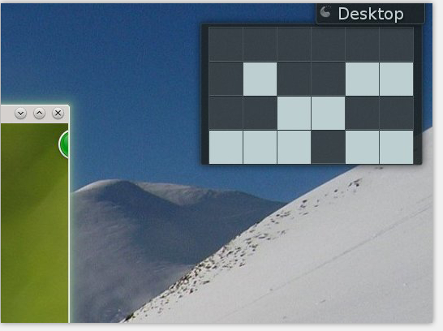

玩过KDE桌面的，都见过很Geek的二进制时钟，不知是否都去算他的显示时间，同事 发我看了下，我研究了下原理，写个python脚本，计算时钟的时间，还挺有趣的。
先看时钟的显示图:
它的显示原理是，一共四行六列，从左至右看列，分别是小时十位–>小时个位–>分钟十位–>分钟个位–>秒钟十位–>秒钟个位，所以统统计算一下，合并就知道了，看下面的python代码:
import functools
int2 = functools.partial(int, base=2)
h = "%s%s" % (int2("0001"), int2("0101"))
m = "%s%s" % (int2("0011"), int2("0010"))
s = "%s%s" % (int2("0101"), int2("0101"))
time = "%s:%s:%s" % (h,m,s)
print time
output
---------
15:32:55
---------
看！就这么简单，这里用到一个functools.partial方法简化了代码的调用，他的主要作用是能够动态设置函数的某个参数默认值，并返回一个新的函数。新的函数在执行的时候，内部逻辑不变，只是参数有了默认值。